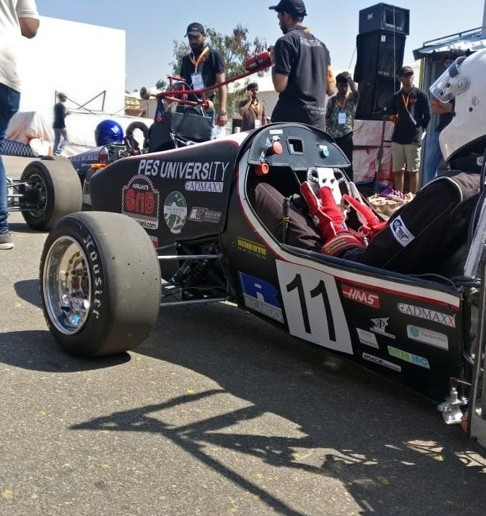
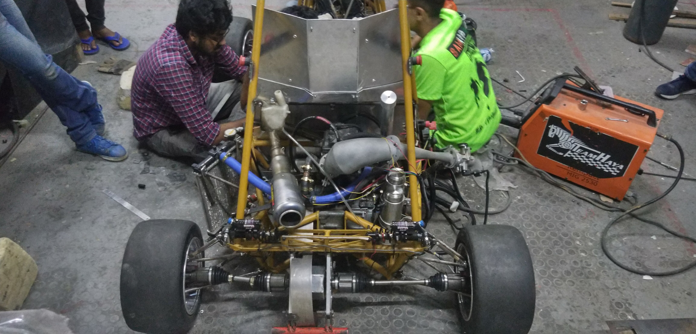
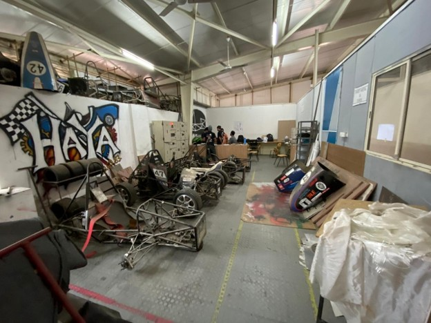
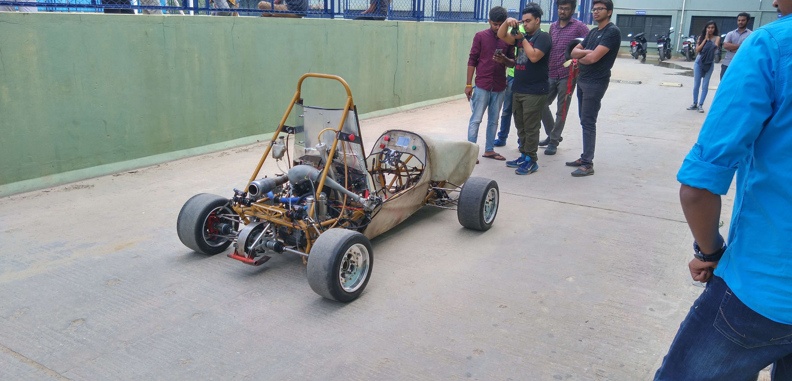
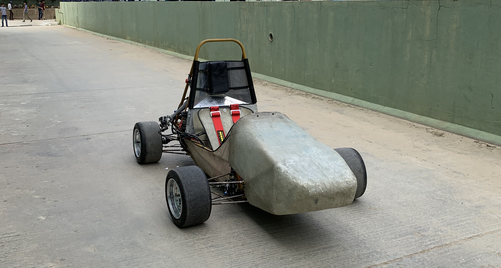
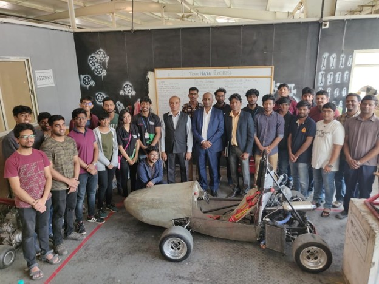

Project · Formula Student

Wireless telemetry, suspension design, and mentoring the next generation of racing engineers.
Team Haya Racing is the Formula Student racing chapter of PES University, competing in Formula Bharat and Formula Student India events. I joined as an intern in summer 2019 and worked my way up to the vehicle dynamics team, eventually mentoring incoming students.
My first major project was designing a wireless steering wheel display — a necessity because Formula Student rules require the steering wheel to detach in under 5 seconds for driver extraction. I built a battery-powered system with a Raspberry Pi and display mounted on the steering wheel, receiving real-time ECU data wirelessly from an ESP32 via MQTT protocol. The GUI was developed in Processing IDE and displayed critical parameters like RPM, speed, and engine temperature.
As a vehicle dynamics team member, I worked on A-arm design iterations and built instrumentation to verify suspension parameters like slip angle using physical sensors. I also got my hands dirty with fabrication — cutting, assembly, and assisting with carbon fiber mold preparation.
In my final year, I mentored four first-year students through 'Project Ignition,' a 6-week program where they learned Arduino, CAN protocol, and data acquisition. They built a Tkinter-based GUI for logging and visualizing vehicle data — skills that would feed directly into the team's telemetry capabilities.
Beyond engineering, I contributed to the business side by helping with cost estimation and BOM preparation for competition presentations, and I designed the team's website.
The project spanned multiple work streams across vehicle electronics, dynamics, fabrication, and mentorship. Click a stage to jump there.
Formula Student regulations require the steering wheel to detach in under 5 seconds for emergency driver extraction. A wired display would complicate this, so I designed a fully wireless solution.
System Architecture: The steering wheel houses a battery-powered Raspberry Pi and display, while an ESP32 connected to the ECU reads CAN bus data and transmits it via MQTT protocol. I developed the GUI in Processing IDE to display RPM, speed, gear position, and engine temperature in real-time.
As part of the vehicle dynamics sub-team, I worked on suspension geometry — specifically iterating on A-arm designs based on hardpoint analysis. I also conceptualized instrumentation for verifying physical parameters like slip angle, using sensors to validate simulation results against real-world measurements. This data-driven approach helped optimize the car's handling characteristics.

I contributed to hands-on fabrication work including cutting and assembly using power tools. I also assisted with carbon fiber composite manufacturing — preparing molds, sanding, and finishing body panels. This gave me practical experience with composite layup techniques and workshop safety.


In my final year, I mentored four first-year students through a 6-week 'Project Ignition' program. I designed a curriculum covering Arduino fundamentals, sensor interfacing (MPU9250 IMU, GPS modules), CAN protocol and message framing, and data visualization using Python Tkinter. The students built a functional DAQ system that logged vehicle data to CSV and displayed real-time plots of speed, acceleration, and heading.
Mentees: V Ananth Sai Gautham Konijeti, Harshith Kumar M B, Koustubh, Eshan Deb
Steering wheel display tested during vehicle test runs on campus. DAQ system validated by logging data from a moving vehicle and plotting speed, engine RPM, and heading in real-time.

| Parameter | MPU9250 | GPS Module |
|---|---|---|
| Acceleration | ✓ (3-axis) | ✓ (derived) |
| Gyroscope | ✓ (3-axis) | ✗ |
| Magnetometer | ✓ (3-axis) | ✗ |
| Speed | ✗ (derived) | ✓ (instantaneous) |
| Position | ✗ | ✓ (lat/long) |
| Heading | ✓ (derived) | ✓ (direct) |
| Lap Timing | ✗ | ✓ |
| Cost | ~₹300 | ~₹300 |
GPS module provides more direct vehicle dynamics parameters (speed, position, lap time) at similar cost to IMU.
Progressed from intern to vehicle dynamics team member to student mentor over two years. Designed wireless steering wheel display, contributed to suspension design iterations, and mentored four first-year students through a 6-week DAQ training program.
Guided by Dr. Rajesh Mathivanan N — Faculty Advisor and Chairperson, Mechanical Engineering Department.
Technical collaboration with Team Haya Racing senior members on chassis, powertrain, and aerodynamics.
Facilitated by PES University workshop facilities and equipment.
External links and team photo.
